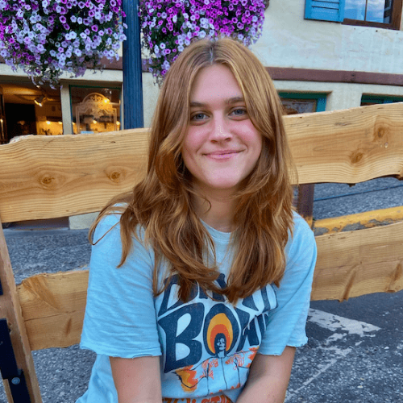

The executive director is responsible for supervising the rest of the executive board. She plans future events and the future vision of the organization.

Productions Director:Maddie Racciatti
The productions director is in charge of securing campus and local services, police, stage equipment, and acts as the primary contact between the organization and the artist and rsquo;s management. Day of show, she supervises day-of-show operations and the stage crew.
Administrative Director:Lindsey Manos
The administrative director handles day to day housekeeping tasks for the organization by reserving rooms, managing the listserv, and planning social events for members. On day of show she heads the hospitality crew, which provides food and assembles the dressing rooms for the artist.
Finance Director:Victoria Reiter
The finance director oversees the organization’s budget, ensures that ticketing policies are in order, and works with other organizations for the co-sponsorship of events on campus. On day of show, she manages the Box Office and works front-of-house with the Selections Director.
Promotions Director:Noah Braun
The promotions director organizes Clubfest, curates social media, negotiates media correspondences, designs innovative posters and quarter-cards, and promotes concerts on and off campus. During day of show, he runs the merchandise crew and handles press.
Selections Director:Jacobo Ospina
The selections director stays up to date on emerging music trends to bring rising acts to Cornell, working as a liaison between the interests of general body members and the executive board to help select the artists. During shows he manages the ticket taking crew and confiscation room.
If you would like to join the Cornell Concert Commission as a member, all you have to do is show up to our weekly meetings! We meet most weeks Thursdays at 5pm in Mcgraw Hall room 165. If you want to work shows but can't make the meetings, that's also fine, and you can get notified when show signups go out by asking to join our listserv via social media DMs, or by otherwise contacting an eboard member. We look forward to meeting you!